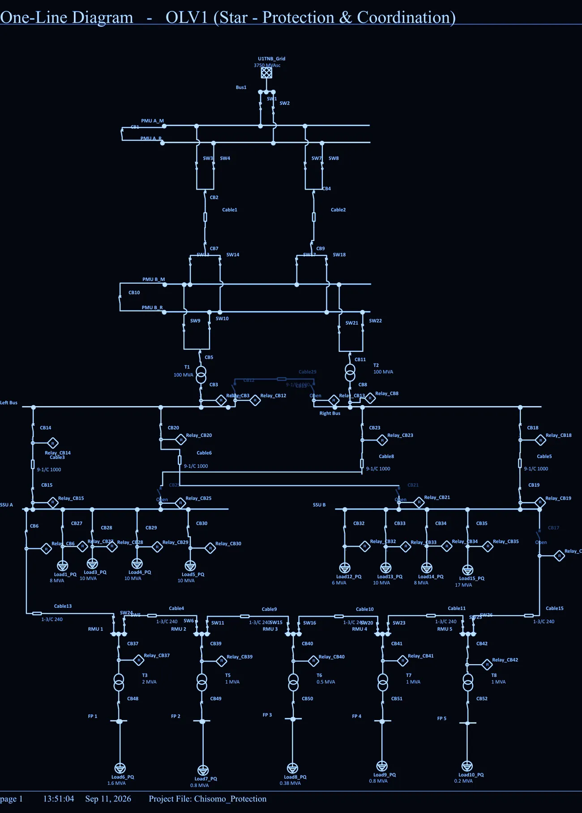
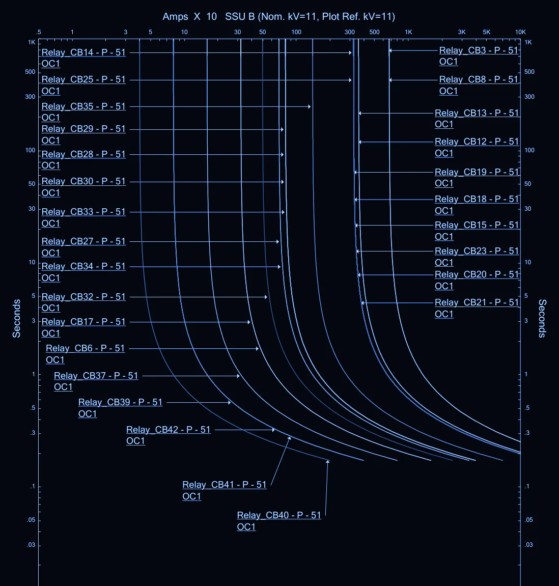
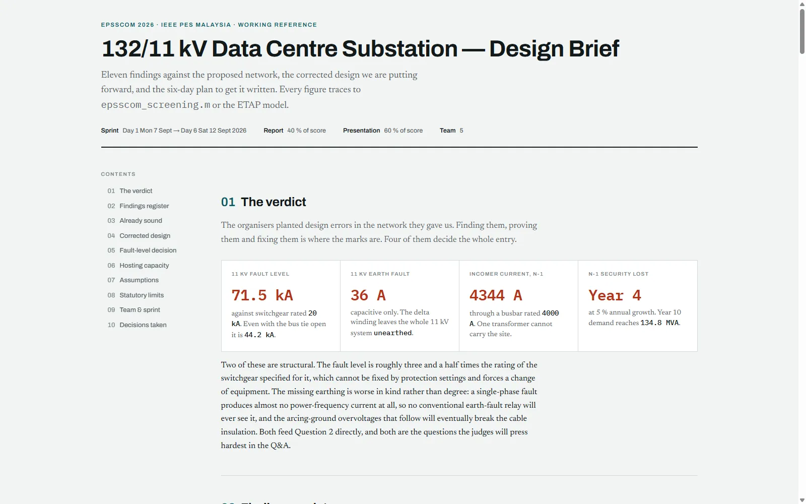

← Selected work
EPSSCOM 2026
A protection study for a 132/11 kV industrial (data-centre) substation with distributed energy resources, modelled in ETAP.

Overview
The team modelled a 132/11 kV substation feeding ring main units and low-voltage feeder pillars, with distributed generation connected at 11 kV. Each member owned one competition question.
My part is the protection scheme: which relay protects each zone, the current transformer and relay schedule, the overcurrent and earth-fault settings, and showing on time-current curves that the devices trip in the right order. I also covered how the distributed generation changes fault currents and why that calls for directional elements.
What I did
- 01Defined the protection philosophy by zone. On the 132 kV incomers: line differential (87L) as main protection, with distance (21) and directional earth fault (67N) as backup.
- 02Built the protection single-line diagram in ETAP with relays on every breaker.
- 03Set phase overcurrent (51) and earth-fault elements and plotted the time-current curves for coordination.
- 04Assessed the effect of distributed generation on protection, including directional protection needs.
Signal path
- ETAP model
- Short-circuit levels
- CT & relay schedule
- OC / EF settings
- TCC coordination
- DER impact
Gallery · 2 images
A closer look

